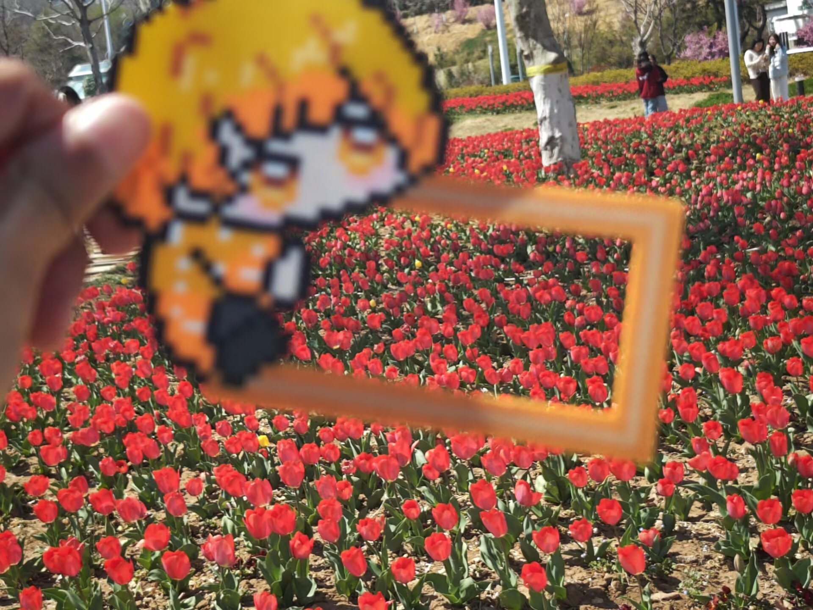
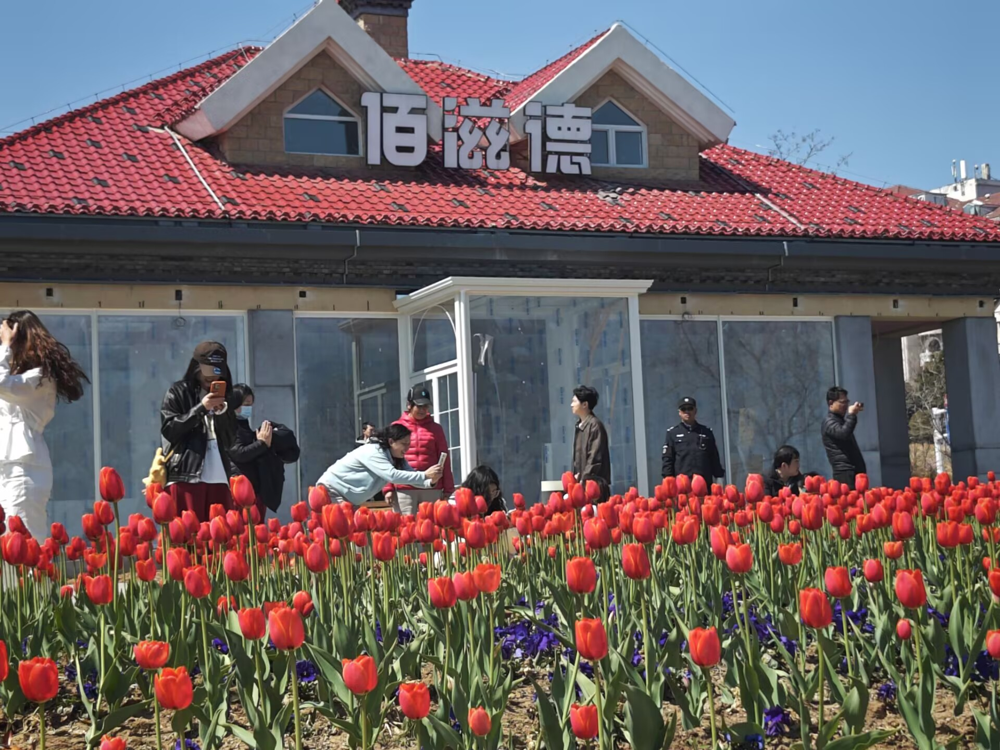
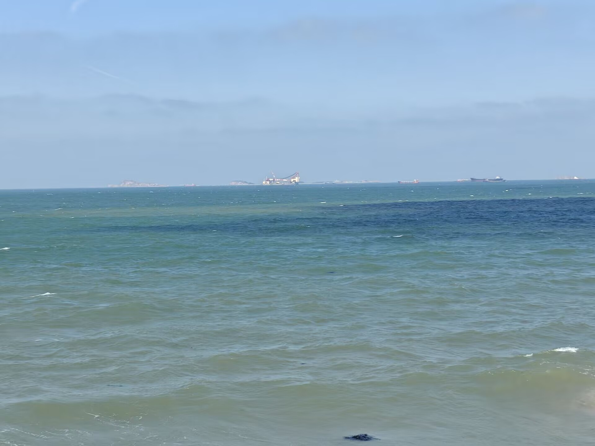

走进校园，首先映入眼帘的是那宽敞而整洁的操场。红色的塑胶跑道环绕着一片翠绿的草坪，仿佛一条鲜艳的丝带镶嵌着一块碧绿的翡翠。每当课间休息或体育课的时候，同学们便像一群欢快的小鸟，在操场上尽情地奔跑、嬉戏、玩耍。有的在跳绳，轻盈的身姿如同跳跃的音符；有的在踢毽子，五彩的毽子上下翻飞，仿佛一朵盛开的花朵；还有的在进行激烈的足球比赛，小小的足球在他们脚下飞快地滚动，伴随着阵阵欢呼声和呐喊声，整个操场都沉浸在一片欢乐的海洋之中。


